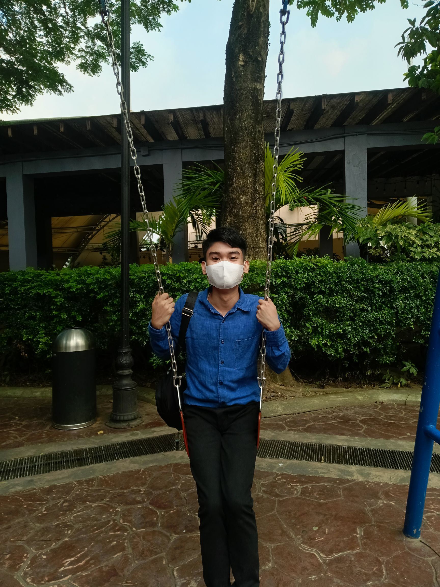
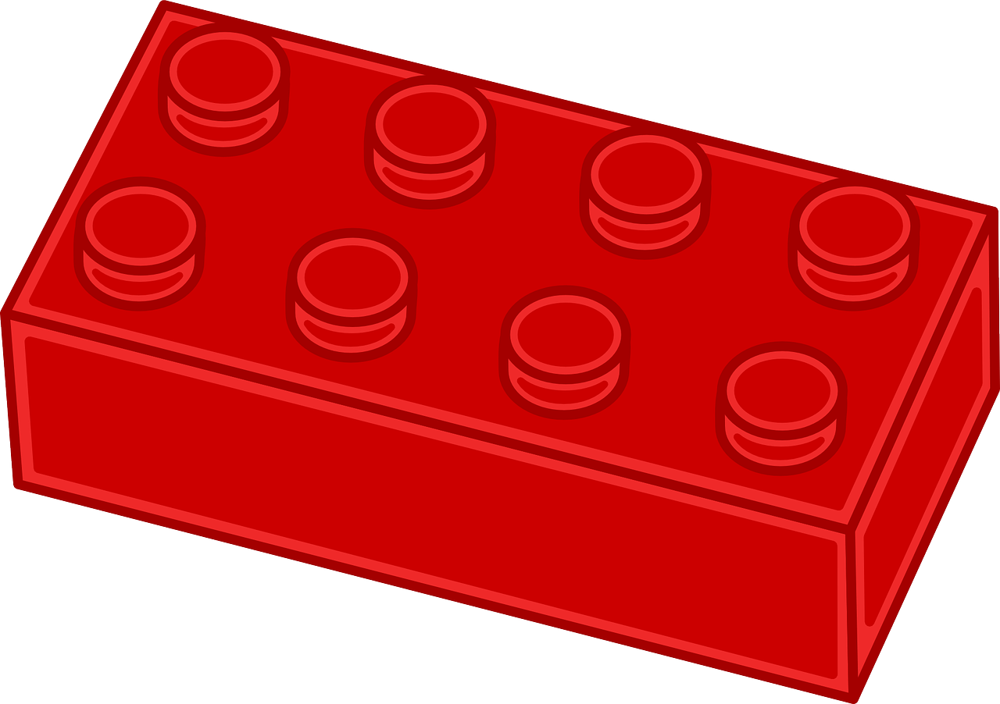
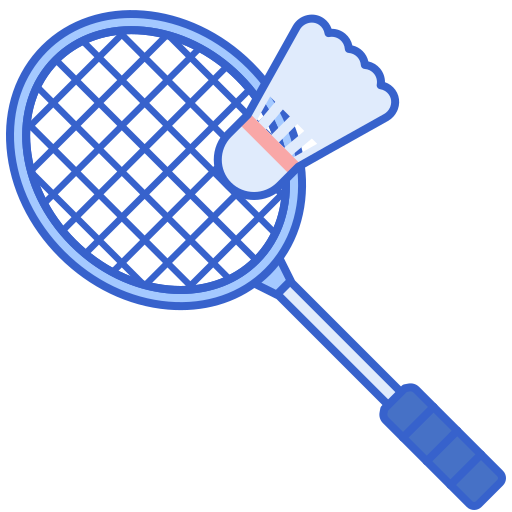
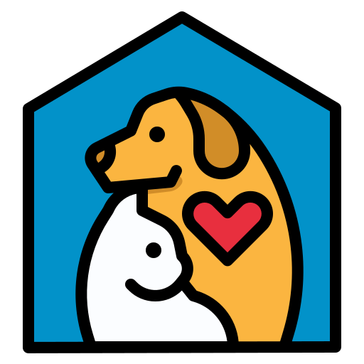

01 — About Me
A night-owl coder from Valenzuela — wired for problems, built for solutions. Personal life motto: "Time is Gold." (Also: sleep is a myth.)

Joseph "Otep" Callos · PLV, BSIT
Full Name
Joseph S. Callos
Nickname
Otep / Otep Codes
Age
20 years old (Nov 3, 2005)
Program
BS Information Technology
School
Pamantasan ng Lungsod ng Valenzuela
Year Level
2nd Year
Location
Valenzuela City, Philippines
Zodiac
Scorpio ♏
Personality
Introvert · Night Owl · Debugging Enthusiast
Life Motto
"Time is Gold"
A second-year BSIT student with a love for building things — whether that's a web app, a Python script, or a freshly improvised gadget. String theory: he plays guitar because every good project needs rhythm.
Joseph "Otep" Callos is a student at Pamantasan ng Lungsod ng Valenzuela who thrives on blending technology
with creativity. He builds web systems that are clean and scalable, designs interfaces that feel intuitive,
and solves problems with persistence and systematic thinking.
Whether it's writing Python automation, structuring HTML/CSS for maintainable design, organizing group
presentations into polished stories, or troubleshooting routers — his work is always guided by functionality
and imagination. He's motivated by his family and friends, and believes that
every second counts.
(Especially the ones spent not debugging the same thing twice.)
Beyond academics, Otep plays guitar, practices sewing, competes in badminton, and collects building blocks.
He handles stress by listening to Rock, Country, and Folk music — his favorites being The Beatles and Jim Croce.
He also has 3 cats and 2 dogs — that's a 5-element array of unconditional love.
01
Collaboration
02
Clarity
03
Creativity
2024 – Present
BS Information Technology — Year 2
Pamantasan ng Lungsod ng Valenzuela (PLV) · Web Systems, Networking, Databases
2023 – 2024
BS Information Technology — Year 1
Core courses: Programming (Java), Web Development, Computer Networks
2023
Senior High School Graduate
ICT / TVL Track · Certified in SQL, Networking, HTML+CSS
Guitar Player
Plays acoustic guitar as a creative outlet — because every good coder needs a way to express() themselves. Genres: Rock, Country, Folk.

Building Blocks
Collects and builds block sets — the same spatial reasoning used in layout and systems design. Also, they're just fun. No justification needed.

Badminton
Quick reflexes on the court — same energy when spotting an off-by-one error. His smash is cleaner than most pull requests.

Pet Dad
3 cats and 2 dogs — a 5-element array of unconditional love. Walking them is his favorite form of garbage collection.
Design
"Good design is invisible — users notice when it's missing, not when it's there. Like a semicolon."
Code
"Write code for the next person who reads it — that person might be you, six months later, wondering what you were thinking."
Life Motto
"Time is Gold. Every second spent on something should bring value — to yourself or to others. Choose your infinite loops wisely."